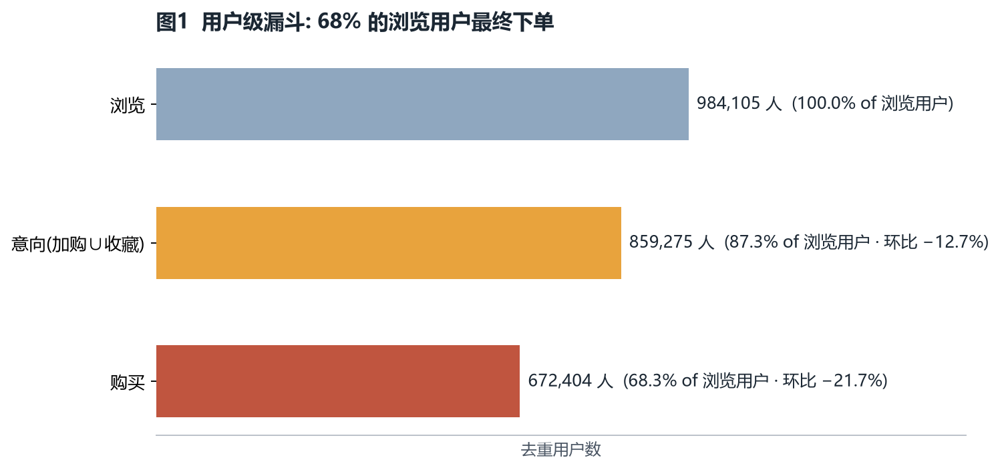
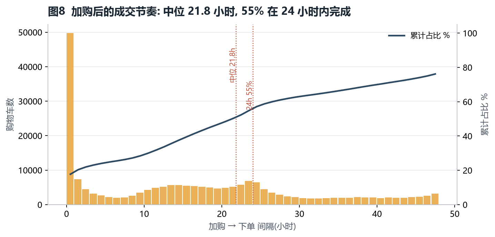
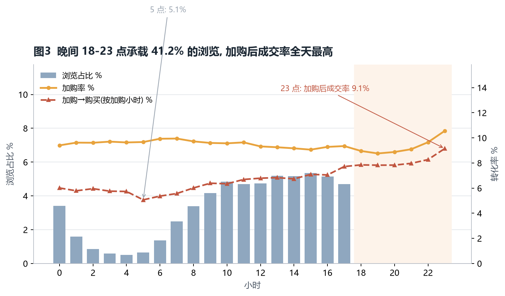
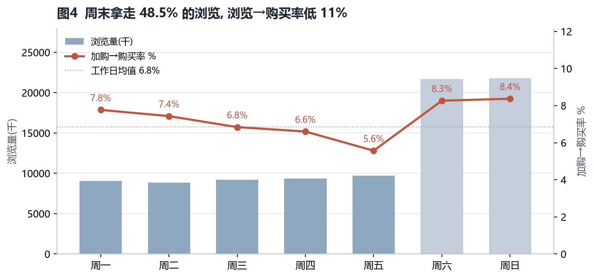
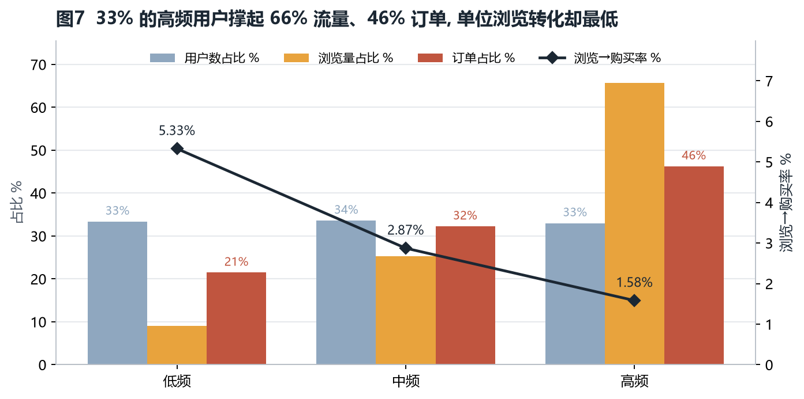
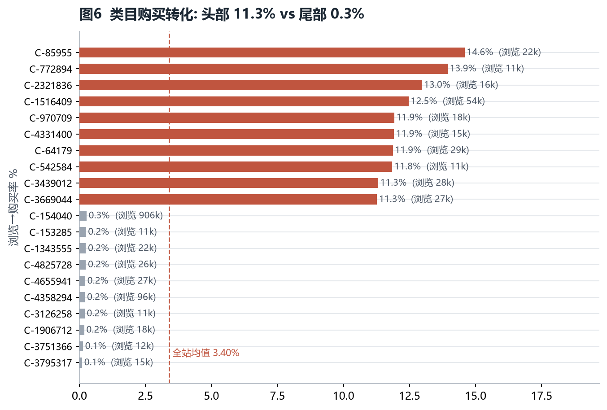
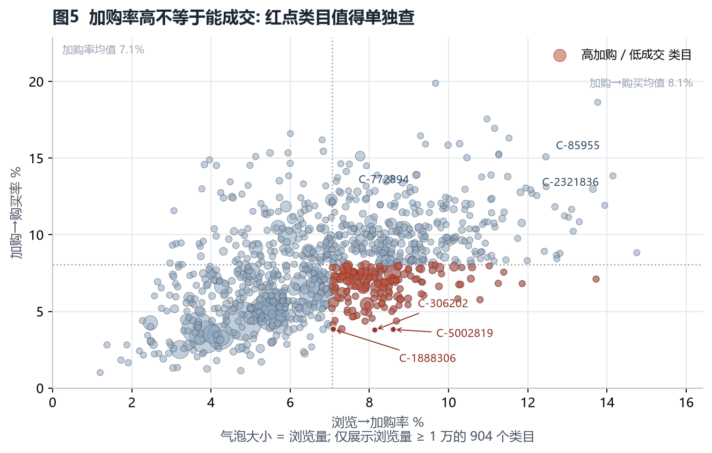

淘宝用户行为数据 · 购买转化归因报告
数据说明（请先读这段） 本报告使用真实公开数据集：阿里巴巴天池「淘宝用户行为数据集 UserBehavior」的 Parquet 版本，100,150,806 行原始行为，时间窗 2017-11-25 至 2017-12-03（北京时间，共 9 天）。所有数字由
uba/管线在本机用 DuckDB 全量计算得出（python -m uba.pipeline，约 1 分钟），不是抽样、不是合成、也不是从别处抄来的结论。 数据质量处理显式计数：窗口外 55,576 行、窗口内完全重复 49 行、非法/空值 0 行，全部剔除并写入outputs/metrics.json → audit；处理方式与对指标的影响见 1.2 清洗与数据质量。 数据清单（URL、字节、SHA256、时间窗）见datasets.lock.yaml。原始数据不在仓库内（版权与体积原因），复跑方式见文末附录。
摘要
一句话结论：真正稀缺的不是"加购"而是"加购之后的成交"——3,870,766 个有效加购对里只有 7.25% 在 48 小时内成交（中位等待 21.8 小时）；同时 81.7% 的订单根本没经过加购。所以"购物车催付"能改善的空间有硬上限，"让人看完就想买"和"把直接下单链路的摩擦拆掉"才是主战场。
| 核心指标 | 数值 | 对比基准 |
|---|---|---|
| 清洗后行为量 | 100,095,181 条 | 9 天，保留率 99.944% |
| 去重用户 / 商品 / 类目 | 987,991 / 4,161,138 / 9,437 | — |
| 用户级：浏览 → 下单用户 | 68.3% | 以 984,105 名浏览用户为基数 |
| 用户级：浏览 → 意向（加购∪收藏） | 87.3% | 95% CI 87.25%–87.38% |
| 用户级：意向 → 购买 | 78.3% | 95% CI 78.17%–78.34% |
| 行为级：1,000 次浏览 | → 61.7 加购 / 32.2 收藏 / 22.5 单 | 93.8% 的浏览没有留下意向信号 |
| 加购 → 购买（序列口径，48h 观测窗） | 7.25% | 24h 内 3.97%；中位等待 21.8h |
| 没有加购记录的订单占比 | 81.7% | 加购不是成交的主路径 |
| 晚间 18-23 点 | 吃下 41.2% 的浏览 | 浏览→购买仅 1.97%（全天最低时段） |
| 晚间加购后成交率 | 8.18% | 凌晨 5.75%、全天 6.73%（最高） |
| 周末 | 吃下 48.5% 的浏览 | 浏览→购买 2.12% vs 工作日 2.37%（低 10.5%）；但加购后成交 8.32% vs 7.70%（反而更高） |
| 高频用户（33.0% 的人） | 贡献 65.7% 浏览、46.3% 订单 | 浏览→购买 1.58%，是低频用户（5.33%）的 1/3.4 |
| 904 个有统计意义的类目 | 浏览→购买 中位 2.71%，10/90 分位 0.76% / 6.92% | 头尾相差约 10 倍 |
| 162 个"高加购、低成交"类目 | 占 11.4% 浏览、13.1% 订单 | 加购率 8.32%（高于均值 7.39%），加购成交率 6.66%（低于均值 8.29%） |
三条要点：
- 漏斗的分母没问题，分子有问题：87.3% 的浏览用户都产生过加购或收藏，但 93.8% 的单次浏览没有留下任何意向信号。用户"会加购"，但"看得太随意"。
- 加购之后是长决策，不是短转化：中位等待 21.8 小时、仅 17.7% 在 1 小时内成交、24 小时内完成 54.8%。"加购即催付"打不到点上，T+20h 左右才是第二次触达的正确时点。
- 加购不是主路径，别把它当唯一抓手：81.7% 的订单没有加购记录。任何只围绕购物车的优化，覆盖面上限就是 18.3% 的订单。
1 数据与方法
1.1 数据来源
| 项目 | 说明 |
|---|---|
| 来源 | 阿里巴巴天池公开数据集「淘宝用户行为数据集 UserBehavior」，Parquet 版本（1.06 GB，100,150,806 行；本地路径不入库，见 datasets.lock.yaml 的 external_path） |
| 字段 | user_id, item_id, category_id, behavior_type ∈ {pv, cart, fav, buy}, timestamp（Parquet 额外带 event_ts, dt，本报告只用前五个） |
| 时间窗 | 2017-11-25 00:00:00 ~ 2017-12-03 23:59:59（Asia/Shanghai），共 9 天 |
| 清洗后规模 | 100,095,181 条行为 / 987,991 用户 / 4,161,138 商品 / 9,437 类目 |
| 行为结构 | pv 89.58%、cart 5.53%、fav 2.89%、buy 2.01% |
| 计算方式 | DuckDB 磁盘表 + SQL 聚合，内存上限 8 GB、8 线程；全量重跑约 1 分钟（15.3 GB 内存机器） |
| 匿名性 | user_id / item_id / category_id 均为原始匿名整数 ID，无姓名、手机号、地址等字段 |
为什么用 DuckDB 而不是 pandas：1 亿行 × 5 列读进 pandas 默认 dtype，常驻内存 6 GB 以上，再做 groupby/merge 很容易在 15 GB 机器上 OOM。DuckDB 把清洗结果落成磁盘表（约 4 GB），内存峰值只与聚合结果有关，且同一套 SQL 能在几万行样本上跑——单测就是这么做的。
1.2 清洗与数据质量
处理原则：不悄悄删、不悄悄留。每一类被剔除的行都在 metrics.json 里计数，并说明理由。
| 类别 | 行数 | 占比 | 处理 | 理由 |
|---|---|---|---|---|
| 原始行 | 100,150,806 | 100% | — | — |
| 窗口外（官方 9 天之外） | 55,576 | 0.0555% | 剔除 | 不属于这 9 天的观测，保留会污染日趋势与漏斗分母 |
| ├ 其中 2017 年非窗口日期 | 53,677 | — | 剔除 | 主要为 11-24 单日 40,231 行及 12-04 之后零星记录 |
| └ 其中年份异常（≠2017） | 1,899 | — | 剔除 | 1902 / 2037 等损坏时间戳，其中 1902/2037 仅 3 行 |
| 完全重复行 | 49 | 0.00005% | 去重 | 同一 (user,item,behavior,timestamp) 完全重复 |
| 非法 / 空值 | 0 | 0% | — | 本数据集无空值与未知行为类型 |
| 清洗后保留 | 100,095,181 | 99.944% | — | — |
关于 1,899 与 datasets.lock.yaml 里 1,280 的差异：lock 文件由上游下载脚本生成，判定"损坏时间戳"用的是更窄的口径（只统计 1902/2037 一类极端值及空时间戳）；本仓库统一按"年份 ≠ 2017 且落在窗口外"判定，得到 1,899 行（其中 1902/2037 只有 3 行，其余为 1905–2036 的散落值）。两种判定都完全落在 55,576 行窗口外记录之内，处理方式一致（剔除），不影响任何指标口径。已在 lock 文件里注明两套口径。
对指标的影响（量化）：
- 行级：剔除 55,625 行 = 原始量的 0.0555%，不影响任何比率的精度。
- 用户级：窗口外记录涉及 41,450 个用户，但其中只有 3 个用户在窗口内没有任何行为。也就是说，如果错误地把窗口外数据保留进来，用户漏斗的分母最多多出 3 人（3 / 987,994 ≈ 0.0003%），结论不可能因此改变。
- 时段/星期：窗口外记录全部是
pv，且集中在 11-24（窗口前一天），保留会让"11-25 首日"看起来像流量高峰，属于必须剔除的系统性偏差。
1.3 指标口径（本报告最容易踩坑的部分）
| 指标 | 定义 | 为什么这样定义 |
|---|---|---|
| 用户级漏斗 | 去重用户数递进：浏览 → 加购∪收藏 → 购买 | 回答"多少人走到了下一步"；避免同一用户多次浏览抬高分母 |
| 行为级转化率 | 目标行为次数 / pv 次数 | 反映单位流量的产出效率 |
| 加购→购买（序列口径） | 同一 (user_id, item_id) 上，加购之后是否出现购买 |
只有序列口径才能回答"加购了却没买"；buy/cart 会把直接下单算进分子，虚高 |
| 观测窗删失校正 | 只统计距数据末尾 ≥48h 的加购（本轮删失 1,515,818 个） | 末尾 48h 内的加购"还没机会转化"，不剔除会把成交率系统性压低 |
| 时段归因 | 按加购发生的小时统计成交率，而非下单小时 | 下单延迟中位 21.8h，按下单时刻会把晚间加购的成交错记到次日凌晨 |
| 首日剔除 | 11-25 不计入日趋势判断 | 前一天没有加购记录，首日"加购→成交"结构性偏低 |
| 类目门槛 | 浏览 ≥10,000 且有加购的类目才参与排名/散点（904 个） | 9,437 个类目里大量只有几十次浏览，转化率波动极大 |
| 活跃分层 | 按用户总浏览量三分位：低频 / 中频 / 高频 | 浏览次数是"逛"的强度，不是购买意图 |
2 漏斗分析

用户级（984,105 名浏览用户为基数）：
| 环节 | 用户数 | 相对上一步 | 95% CI |
|---|---|---|---|
| 浏览 pv | 984,105 | — | — |
| 加购 cart | 738,996 | 75.09% | 75.01%–75.18% |
| 收藏 fav | 389,823 | 39.61% | 39.52%–39.71% |
| 意向（加购∪收藏） | 859,275 | 87.32% | 87.25%–87.38% |
| 购买 buy | 672,404 | 78.25%（占意向） | 78.17%–78.34% |
行为级：1,000 次浏览 → 61.7 次加购、32.2 次收藏、93.9 次意向行为、22.5 笔订单。也就是说，93.8% 的单次浏览没有产生任何加购/收藏信号。
加购之后发生了什么（3,870,766 个有效加购对，48h 观测窗）：
- 整体成交率 7.25%；24h 内成交 3.97%；24 小时内完成了全部转化的 54.8%。
- 延迟中位 21.8 小时；1 小时内成交仅 17.7%——"加购即催付"错过大部分决策窗口，真正的第二次触达点在 T+20h 左右。
- 81.7% 的订单没有经过加购（直接下单）。加购是最大的一块"可干预库存"，但它不是成交的主路径，覆盖面上限只有 18.3% 的订单。

流失点判断：用户级看，87.3% 的浏览用户都产生过意向，78.3% 的意向用户会下单——用户并不"不会买"。真正的缺口在行为级的意向密度（93.8% 的浏览无意向）和加购后的兑现率（7.25%）。所以优化重心应该是"让每次浏览更容易留下意向"，而不是"再把钱砸进漏斗顶部"，也不是"只做购物车催付"。
3 归因发现
发现 1｜晚间 18-23 点：拿量靠晚间，效率靠白天

- 晚间 18-23 点吃下 41.2% 的浏览（36.9M 次），但浏览→购买只有 1.97%，是四个时段里最低的（上午 2.56%、下午 2.59%、凌晨 1.67%）。
- 单小时峰值：21 点浏览占比 8.41%；浏览→购买最高的却是 10 点（2.95%），最低的 23 点（1.79%），相差 1.65 倍。
- 但按加购小时后看，晚间加购的成交率 8.18%，高于日间 6.73% 与凌晨 5.75%；单小时最高 23 点 9.15%，最低 5 点 5.07%。
结论：晚间是"流量高峰 + 购物车兑现最好"，但不是"浏览最容易成交"的时段。晚间适合承接与催付（人已经加购了，且更愿意在当晚/次日下单），白天适合转化投放（同样一次浏览更可能直接成交）。把"晚间=高效"当作单一结论会误导预算。
发现 2｜周末：流量红利是真的，"成交荒漠"是假的

- 周末（4/9 天）拿走 48.5% 的浏览，浏览→购买 2.12%，工作日 2.37%，低 10.5%。
- 但加购→购买率周末反而更高：周六 8.26%、周日 8.37%，工作日 5.57%–7.77%（加权 7.70%，周末 8.32%，高 8%）。
- 结构上，周末的"逛"更多：加购率 9.48%/9.44% 与工作日 9.21%–9.57% 基本持平，说明周末不是"意向更弱"，而是意向更分散、单次浏览更不专注。
结论：周末适合做加购/收藏蓄水 + 购物车兑现，而不是把预算全压在"周末冲刺成交"。周末加购的人，成交概率其实比工作日更高。
发现 3｜用户分层：高频用户撑流量，低频用户撑效率

| 分层 | 用户占比 | 浏览占比 | 订单占比 | 浏览→购买 | 每单所需浏览 | 购买用户占比 |
|---|---|---|---|---|---|---|
| 低频（≤33 分位） | 33.4% | 9.1% | 21.5% | 5.33% | 18.8 | 57.8% |
| 中频 | 33.6% | 25.2% | 32.3% | 2.87% | 34.8 | 68.9% |
| 高频 | 33.0% | 65.7% | 46.3% | 1.58% | 63.2 | 77.6% |
- 高频用户（中位浏览 156 次、9 天全活跃）贡献 65.7% 的浏览，却只换来 1.58% 的浏览→购买；低频用户用 9.1% 的浏览换来 21.5% 的订单。
- 高频用户的
浏览/单是低频用户的 3.4 倍——典型"逛得多、买得少"。 - 但注意：高频用户的购买用户占比更高（77.6% vs 57.8%），他们是"稳定的老客"，只是单位浏览的边际产出低。
结论：用"浏览次数"当用户价值代理会系统性高估高频用户。新客/低频人群的每次浏览更值钱；高频人群适合做复购与客单，不适合按浏览量给预算。
发现 4｜类目差异：10 倍量级，而不是 2 倍

- 904 个有统计意义的类目（浏览 ≥1 万且有加购，覆盖 89.9% 浏览、80.7% 订单）浏览→购买率：10 分位 0.76%、中位 2.71%、90 分位 6.92%。
- 头部：85955（14.59%）、772894（13.95%）、2321836（12.97%）、1516409（12.47%）、970709（11.92%）。
- 尾部：3795317（0.10%）、3751366（0.14%）、1906712（0.18%）。
结论：类目是比"时段"更强的分层变量。头尾相差约 10 倍，同预算下向高转化类目倾斜的边际订单增量远大于调整投放时段。
发现 5（反直觉）｜162 个类目"加购不错、成交很差"

| 指标 | "高加购、低成交"组（162 个类目） | 纳入评估的类目均值 |
|---|---|---|
| 浏览占比 | 11.43% | — |
| 订单占比 | 13.07% | — |
| 加购率 pv→cart | 8.32% | 7.39%（高 12.6%） |
| 加购→购买 cart→buy | 6.66% | 8.29%（低 19.7%） |
| 典型个体 | 306202（3.79%）、5002819（3.82%）、1678374（4.37%）、2154669（4.37%）、1447685（4.55%） | — |
- 这组类目吃掉 11.4% 的浏览、产出 13.1% 的订单，加购率跑赢均值，但加购后的成交率只有均值的八成。
- 效果比合成数据版的"成交只有均值 1/3"温和得多——真实数据里这个反直觉现象存在但不夸张。
可能原因（需补充数据验证）：
- 比价/凑单型决策——加购是"放进购物车比价、等满减"，成交被促销节奏截走。
- 结算摩擦——运费门槛、规格加价、库存切换把用户劝退。
- 类目字段不一致——4,161,138 个商品里有 1,405 个商品在不同记录里挂到多个
category_id（涉及 61,927 行，占 0.06%）。类目级结论按"类目"聚合时会把这些商品的行为拆到多个类目，属于已知口径噪声，不影响整体结论方向。
这是最值得跟进的一条：流量大、加购意愿强、成交差，最容易定位原因，也最容易见效。但不要照搬合成数据版的"1/3 均值"结论，真实差距只有约 20%。
4 可执行建议
| # | 建议 | 依据 | 预期收益（本数据测算） |
|---|---|---|---|
| 1 | 购物车第二次触达放在 T+20h，不是 T+0/1h | 中位等待 21.8h；1h 内仅成交 17.7%，24h 内完成 54.8% | 加购成交率每 +1pp ≈ +38,708 单（+1.92% 订单） |
| 2 | 预算按"白天转化、晚间承接"分配 | 白天浏览→购买 2.56%–2.59%，晚间 1.97%；但晚间加购成交 8.18% 最高 | 每 1,000 个加购从凌晨（5.75%）迁到晚间（8.18%）≈ +24 单 |
| 3 | 把"直接下单"链路当成独立漏斗来优化 | 81.7% 的订单没有加购记录 | 覆盖面远大于购物车优化；具体增益需埋点补充（TODO） |
| 4 | 优先排查 162 个高加购低成交类目 | 占 11.4% 浏览、13.1% 订单；成交率 6.66% vs 均值 8.29% | 追平均值 ≈ +13,500 单（+0.67% 订单） |
| 5 | 人群包从"高活跃"换成"低频 + 近期加购" | 低频浏览→购买 5.33%，高频 1.58% | 同等曝光下的单位浏览订单效率提升约 3.4 倍 |
| 6 | 周末做蓄水与兑现，不做成交冲刺 | 周末 48.5% 浏览、转化低 10.5%，但加购成交 8.32% 高于工作日 | 周末浏览转化追平工作日 ≈ +108,000 单（上限，不做承诺） |
优先级建议：1 > 3 > 4 > 2 > 5 > 6。建议 1、2 依赖现有行为数据即可上线；建议 3 需要埋点与结算页数据；建议 6 的测算属于理论上限，不宜写进 KPI。
所有收益测算都是"其他条件不变"的静态外推，真实增量必须 A/B 验证。订单总量口径：2,015,807 笔（行为级 buy）。
5 局限与下一步
- 观测窗只有 9 天（2017-11-25 ~ 12-03）。跨大促、跨周复购不可观测；加购→购买只覆盖 48h，长决策链路被低估。首日已从日趋势中剔除，末尾 48h 的加购（1,515,818 个，占 28.1%）已做删失处理。
- 没有金额维度。原数据集不含价格与成交金额，只能做订单数归因，不能做 GMV 归因。若引入金额，"高加购低成交"的类目可能是高客单结构，结论方向会变。
- 加购不是主路径。81.7% 的订单没有加购记录，漏斗并未覆盖它们的决策过程（多为"立即购买"入口）。这部分需要结算页/详情页埋点才能分析。
- 类目字段不一致。1,405 个商品挂多个
category_id（涉及 61,927 行，0.06%），类目级结论存在聚合噪声。 - 相关不等于因果。晚间/周末的差异可能同时是"人群本身意图不同"的选择效应，要证因果需要时段 A/B 或倾向得分匹配。
- 一个 ID 体系一套行为。UserBehavior 不含设备、渠道、优惠券字段，无法拆解"站内推荐 vs 搜索 vs 直邮"的流量来源差异。
下一步：① 接入商品价格与优惠券维度，把订单归因升级为 GMV 归因；② 抽样补齐结算页/详情页埋点，验证建议 3 的"直接下单"漏斗；③ 对建议 1 做 30 天 A/B，验证 T+20h 触达的真实增量；④ 用 Olist / UCI Online Retail II 做跨数据集口径迁移验证（同一套 SQL 能否复现同方向结论）。
附录：复现
# 1) 安装依赖
pip install -r requirements.txt
# 2) 指向真实数据（或写进 .env，见 .env.example）
export UBA_DATA_PATH=/path/to/taobao.parquet
# 3) 一键重算：指标 → 图表 → HTML
python -m uba.pipeline && python -m uba.figures && python -m uba.report
数据指纹与时间窗见 datasets.lock.yaml；指标明细在 outputs/（10 张 CSV + metrics.json，本报告每个数字都能在这里溯源）；口径单测在 tests/test_analysis.py。
图表清单：图1 用户漏斗｜图2 每日趋势｜图3 小时转化｜图4 星期转化｜图5 类目散点｜图6 类目排名｜图7 用户分层｜图8 加购成交节奏。